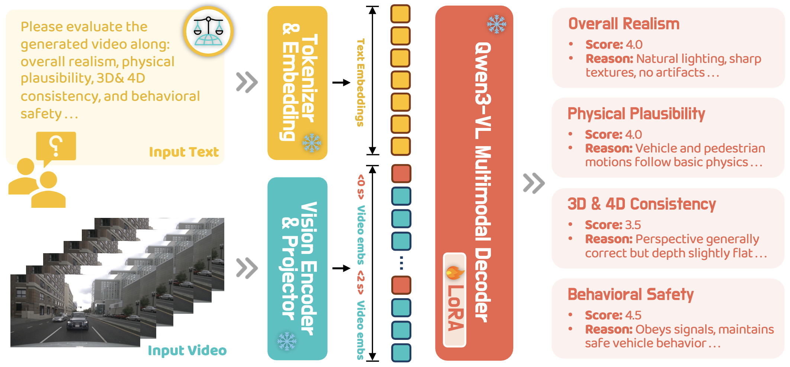
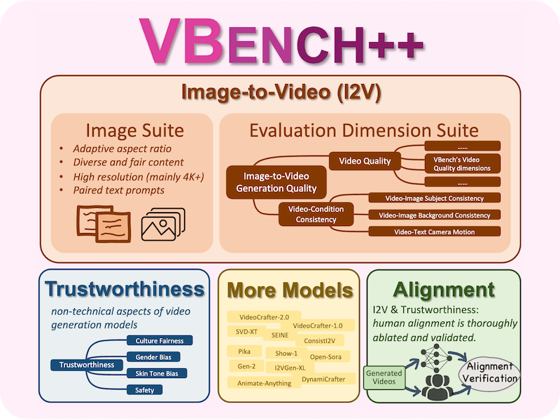
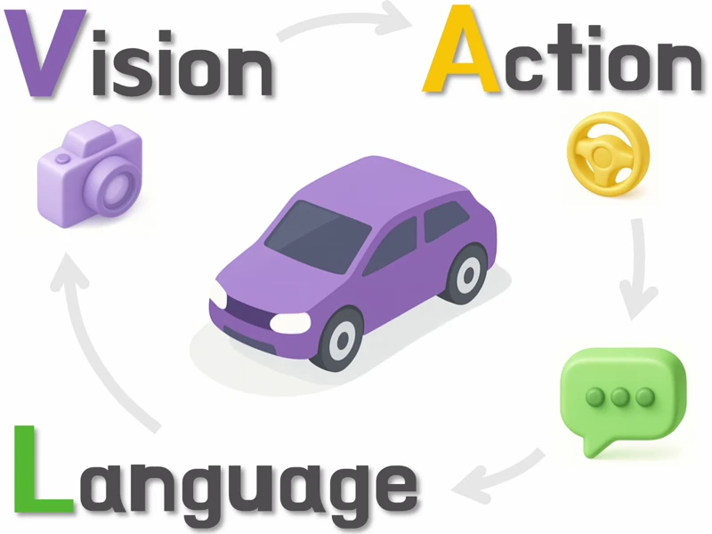

Generative world models are reshaping embodied AI, enabling agents to synthesize realistic 4D driving environments that look convincing but often fail physically or behaviorally.
Despite rapid progress, the field still lacks a unified way to assess whether generated worlds preserve geometry, obey physics, or support reliable control.
We introduce Worldlens, a full-spectrum benchmark evaluating how well a model builds, understands, and behaves within its generated world.
measuring whether a model can synthesize visually realistic, temporally stable, and semantically consistent scenes.
Even state-of-the-art models that achieve low perceptual error (e.g., LPIPS, FVD) often suffer from view flickering or motion instability, revealing the limits of current diffusion-based architectures.
probing whether generated videos can be reprojected into a coherent 4D scene using differentiable rendering.
Models that appear sharp in 2D frequently collapse when reconstructed, producing geometric "floaters": a gap that exposes how temporal coherence remains weakly coupled in most pipelines.
testing if a pre-trained action planner can operate safely inside the generated world.
High open-loop realism does not guarantee safe closed-loop control; almost all existing world models trigger collisions or off-road drifts, underscoring that photometric realism alone cannot yield functional fidelity.
evaluating whether the synthetic data support downstream perception models trained on real-world datasets.
Even visually appealing worlds may degrade detection or segmentation accuracy by 30-50%, highlighting that alignment to task distributions, not just image quality, is vital for practical usability.
capturing subjective scores such as world realism, physical plausibility, and behavioral safety through large-scale human annotations.
Our study reveals that models with strong geometric consistency are generally rated as more "real", confirming that perceptual fidelity is inseparable from structural coherence.
A Journey of Evaluation
WorldLens: Full-Spectrum Evaluations
Generative world models must go beyond visual realism to achieve geometric consistency, physical plausibility, and functional reliability.
WorldLens is a unified benchmark that evaluates these capabilities across five complementary aspects - from low-level appearance fidelity to high-level behavioral realism.
Each aspect is decomposed into fine-grained, interpretable dimensions, forming a comprehensive framework that bridges human perception, physical reasoning, and downstream utility.
We invite researchers and practitioners to submit their models for evaluation on the leaderboard, enabling consistent comparison and supporting progress in world model research.
To bridge the gap between human judgment and automated evaluation, we curate a large-scale
human-annotated dataset comprising 26,808 scoring records of generated videos.
Each entry includes a discrete score and a concise textual rationale written by annotators,
capturing both quantitative assessment and qualitative explanation.
The dataset covers complementary dimensions of perceptual quality.
This balanced design ensures comprehensive coverage across spatial, temporal,
and behavioral aspects of world-model realism.
We envision
WorldLens-26K
as a foundational resource for training auto-evaluation agents and constructing
human-aligned reward or advantage functions for reinforcement fine-tuning of
generative world models.
WorldLens-Agent

WorldLens-Agent: SFT from Human Feedback
Evaluating generated worlds hinges on human-centered criteria (physical plausibility) and subjective preferences (perceived realism) that quantitative metrics inherently miss, highlighting the necessity of a human-aligned evaluator.
To this end, we introduce WorldLens-Agent, a vision-language critic agent trained on WorldLens-26K.
Through LoRA-based supervised fine-tuning, we distill human perceptual and physical judgments into a Qwen3-VL, enabling it to internalize criteria such as realism, plausibility, and behavioral safety.
This provides consistent, human-aligned assessments, offering a scalable preference oracle for benchmarking future world models.
Generated Examples
Dimension: Vehicle Realism
Good Case
Failure Case
Dimension: Pedestrian Realism
Good Case
Failure Case
Dimension: Subject Fidelity
Good Case
Failure Case
Dimension: Depth Discrepancy
Good Case
Failure Case
Dimension: Temporal Consistency
Good Case
Failure Case
Dimension: Semantic Consistency
Good Case
Failure Case
Dimension: Photometric Discrepancy
Good Case
Failure Case
Dimension: Geometric Discrepancy
Good Case
Failure Case
Dimension: Novel View Quality
Good Case
Failure Case
Dimension: Novel View Discrepancy
Good Case
Failure Case
Dimension: Map Segmentation
Good Case
Failure Case
Dimension: 3D Object Tracking
Good Case
Failure Case
Dimension: Occupancy Prediction
Good Case
Failure Case
Contributors
Ao Liang
Core Contributor
Lingdong Kong
Core Contributor, Project Lead
Tianyi Yan
Core Contributor
Hongsi Liu
Core Contributor
Wesley Yang
Core Contributor
Ziqi Huang
Contributor, Human Preference
Wei Yin
Contributor, Closed-Loop Simulation
Jialong Zuo
Contributor, Object ReID
Yixuan Hu
Contributor, Depth
Dekai Zhu
Contributor, Depth
Dongyue Lu
Contributor, Cross-View Matching
Youquan Liu
Contributor, Human Preference
Guangfeng Jiang
Contributor, Reconstruction
Linfeng Li
Contributor, Human Preference
Xiangtai Li
Contributor, Human Preference
Long Zhuo
Contributor, Human Preference
Lai Xing Ng
Advisor
Benoit R. Cottereau
Advisor
Changxin Gao
Advisor
Liang Pan
Advisor
Wei Tsang Ooi
Advisor
Ziwei Liu
Advisor
Related Projects
3D and 4D World Modeling: A Survey
VBench: Benchmark Suite for Video Generative Models

VBench++: Versatile Video Generation Benchmark

VLA for Autonomous Driving: Past, Present, and Future
LiDARCrafter: Dynamic 4D World Modeling from LiDAR Sequences